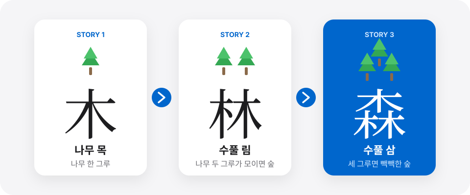

스토리 연상 기억법
뇌과학 맹모한자
맹모한자는 한자를 반복해서 쓰고 외우는 학습에서 벗어나, 스토리 연상법으로 한자의 모양과 뜻을 쉽게 이해하고 기억하며 다양한 어휘로 확장하는 한자 어휘 프로그램입니다.

MAENGMO HANJA
외우는 한자에서
외우는 한자에서
이해하고 활용하는 한자로
01
3글자 스토리 연상 학습
서로 관련된 한자 3자를 하나의 재미있는 이야기로 연결하여 한자의 모양과 뜻을 쉽게 이해하고 오래 기억합니다.
02
챈트 · 노래 · 게임으로 즐겁게 반복
보고 쓰는 반복 학습에서 벗어나 챈트 · 노래 · 게임 등 다양한 활동을 통해 한자를 자연스럽게 반복하고 익힙니다.
03
누적 반복 기억법
새로 배우고 끝나는 학습이 아니라, 이전에 배운 한자를 지속적으로 반복 · 인출하여 오래 기억하도록 합니다.
04
두뇌 계발 한자 학습법
배운 한자를 활용해 생각하고 해결하는 힘을 키웁니다.
배운 한자를 활용한 다양한 문제와 활동을 통해 주의력 · 관찰력 · 기억력 · 사고력 · 추리력을 기르고, 스스로 생각하고 답을 찾아가는 문제 해결력을 키웁니다.
05
교과 어휘 이해로 연결
한자의 뜻을 바탕으로 개념어와 추상어의 의미를 이해하여 국어뿐 아니라 사회 · 과학 등 교과서를 읽고 이해하는 데 필요한 어휘의 기반을 다집니다.
06
고급 어휘에서 비문학 독해까지
한자를 알면 어려운 글의 어휘가 쉬워집니다.
맹모한자는 한자의 뜻을 바탕으로 교과 개념어 · 추상어 등 학습에 필요한 문어체 어휘를 이해하고 익히도록 합니다.